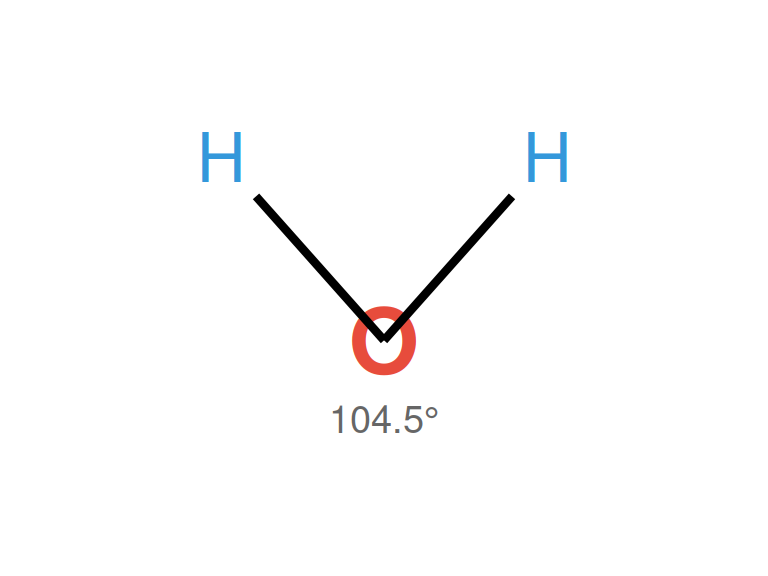

Características de la molécula de agua y su importancia en la relación suelo-agua-planta-atmósfera
Lectura complementaria — Unidad 1
1. Introducción
El agua es la molécula más abundante en los tejidos vegetales (80-95% de la masa fresca) y el vehículo que conecta el suelo, la planta y la atmósfera. Comprender sus propiedades físico-químicas es fundamental para entender cómo se mueve el agua a través del continuo suelo-planta-atmósfera (SPAC, por sus siglas en inglés) y cómo las plantas la utilizan.
Esta lectura complementa la Sesión 1.1 (Propiedades del agua, ciclo hidrológico y contexto agrícola) y sienta las bases para entender los procesos de retención de agua en el suelo (Unidad 2), absorción radical y transpiración (Unidad 3).
2. Estructura molecular del agua
2.1 Composición
La molécula de agua está formada por dos átomos de hidrógeno (H) y uno de oxígeno (O), unidos por enlaces covalentes:
\[H_2O\]
2.2 Geometría molecular
Los átomos de H forman un ángulo de 104.5° con respecto al O, dándole a la molécula una geometría angular (en forma de “V”):
2.3 Electronegatividad y polaridad
- El oxígeno es más electronegativo que el hidrógeno (3.44 vs 2.20 en la escala de Pauling)
- Los electrones compartidos pasan más tiempo cerca del O que de los H
- Esto genera una separación de cargas: el O adquiere una carga parcial negativa (\(\delta^-\)) y cada H una carga parcial positiva (\(\delta^+\))
- La molécula de agua es un dipolo eléctrico permanente
3. Puentes de hidrógeno
La consecuencia más importante de la polaridad del agua es la formación de puentes de hidrógeno:
δ+ δ- δ+ δ-
H ─── O ····· H ─── O
| |
H H
δ+ δ+- Cada molécula de agua puede formar hasta 4 puentes de hidrógeno con moléculas vecinas
- La energía de un puente de hidrógeno es ~20 kJ/mol (mucho menor que un enlace covalente O-H: ~460 kJ/mol)
- Los puentes de H se rompen y reforman constantemente (tiempo de vida ~1-10 picosegundos)
- Esta red dinámica de puentes de H es responsable de las propiedades anómalas del agua
4. Propiedades del agua relevantes para el sistema SPA
4.1 Cohesión
La cohesión es la atracción entre moléculas de agua mediante puentes de hidrógeno.
Importancia en el SPA: - Permite que el agua forme una columna continua dentro del xilema - La tensión generada por la transpiración en las hojas se transmite a través de toda la columna de agua hasta las raíces (teoría de la cohesión-tensión) - Sin cohesión, el agua en el xilema “se rompería” (cavitación) y dejaría de ascender
4.2 Adhesión
La adhesión es la atracción entre moléculas de agua y superficies sólidas (paredes celulares, partículas de suelo).
Importancia en el SPA: - Permite que el agua se adhiera a las paredes del xilema, ayudando a contrarrestar la gravedad - En el suelo, el agua se adhiere a las partículas coloidales (arcillas, materia orgánica) - La adhesión + cohesión generan el ascenso capilar del agua en el suelo y en la planta
4.3 Tensión superficial
La tensión superficial es la fuerza que actúa en la interfaz agua-aire, causada por la atracción desigual de las moléculas de la superficie hacia el interior del líquido.
- El agua tiene la tensión superficial más alta de todos los líquidos comunes (72.8 mN/m a 20°C), excepto el mercurio
- Solo algunos insectos pueden “caminar sobre el agua” gracias a esta propiedad
Importancia en el SPA: - La tensión superficial genera la interfaz curva (menisco) en los poros del suelo - Esta curvatura produce una diferencia de presión a través de la interfaz: es la base del potencial mátrico (\(\Psi_m\)) - En los poros pequeños del suelo, la tensión superficial retiene agua contra la gravedad
4.4 Capilaridad
La capilaridad es la capacidad del agua de ascender por tubos estrechos (capilares) contra la gravedad, resultado combinado de cohesión y adhesión.
La altura de ascenso capilar se describe con la ecuación de Jurin:
\[h = \frac{2 \gamma \cos \theta}{\rho g r}\]
Donde: - \(h\) = altura de ascenso (m) - \(\gamma\) = tensión superficial del agua (0.0728 N/m) - \(\theta\) = ángulo de contacto (≈ 0° para agua sobre vidrio/suelo limpio) - \(\rho\) = densidad del agua (1000 kg/m³) - \(g\) = aceleración de gravedad (9.81 m/s²) - \(r\) = radio del capilar (m)
ImportanteImplicancia práctica
En un poro de 0.01 mm de radio, el agua asciende ~1.5 m. En un poro de 0.001 mm (arcilla), puede ascender ~15 m. Esto explica por qué los suelos arcillosos retienen más agua que los arenosos.
4.5 Calor específico
El agua tiene un calor específico excepcionalmente alto: 4.18 J/g·°C (1 cal/g·°C).
Esto significa que se necesita mucha energía para aumentar su temperatura.
Importancia en el SPA: - El agua en el suelo y en los tejidos vegetales actúa como amortiguador térmico - Los suelos húmedos se calientan y enfrían más lentamente que los secos - Las plantas mantienen temperaturas foliares más estables gracias al alto contenido de agua - Los cuerpos de agua (lagos, embalses) moderan el clima local - El riego puede usarse para control de heladas: al aplicar agua, se libera calor latente al congelarse
4.6 Calor latente de vaporización
El calor latente de vaporización es la energía necesaria para convertir agua líquida en vapor: 2.45 MJ/kg a 20°C (el valor más alto de cualquier líquido común).
Importancia en el SPA: - La transpiración vegetal enfría las hojas: al evaporarse, el agua “se lleva” calor del tejido foliar - Una planta de maíz puede transpirar ~200 L de agua en su ciclo, disipando ~490 MJ de energía térmica - Es el fundamento de la evapotranspiración: la energía solar que llega a un cultivo se disipa principalmente como calor latente (evaporación + transpiración) - Relación directa con el balance de energía (Rn = G + H + LE)
4.7 Poder disolvente
El agua es el “solvente universal” debido a su polaridad:
- Disuelve compuestos iónicos (sales, fertilizantes) disociando los iones
- Disuelve compuestos polares (azúcares, aminoácidos)
- Transporta nutrientes en la solución del suelo hacia las raíces
- Transporta iones y moléculas en el xilema (savia bruta) y floema (savia elaborada)
Importancia agronómica: - La fertirrigación aprovecha esta propiedad para aplicar nutrientes disueltos en el agua de riego - La salinidad del suelo es consecuencia directa: las sales disueltas aumentan el potencial osmótico, dificultando la absorción de agua por las raíces
5. Implicancias integradas para el continuo SPA
| Propiedad | Efecto en el suelo | Efecto en la planta | Efecto en la atmósfera |
|---|---|---|---|
| Cohesión | — | Columna de agua en xilema | Tensión transmitida desde estomas |
| Adhesión | Agua retenida en partículas | Agua adherida a paredes del xilema | — |
| Tensión superficial | Potencial mátrico (\(\Psi_m\)) | Interfaz en mesófilo foliar | — |
| Capilaridad | Ascenso de agua en poros | Ascenso en vasos xilemáticos | — |
| Calor específico | Amortiguación térmica del suelo | Estabilidad térmica foliar | Moderación climática |
| Calor latente | Enfriamiento por evaporación desde el suelo | Enfriamiento por transpiración | Motor de la evapotranspiración |
| Poder disolvente | Solución del suelo, transporte de nutrientes | Savia xilemática y floemática | — |
6. El agua en el contexto del potencial hídrico
Todas las propiedades anteriores se integran en el concepto de potencial hídrico (\(\Psi\)), que determina la dirección y magnitud del movimiento del agua en el SPA:
\[\Psi = \Psi_m + \Psi_o + \Psi_g + \Psi_p\]
Donde cada componente está influenciado por las propiedades moleculares del agua:
- \(\Psi_m\) (potencial mátrico): Efecto de la tensión superficial y adhesión en los poros del suelo y paredes celulares
- \(\Psi_o\) (potencial osmótico): Efecto del poder disolvente — los solutos reducen la energía libre del agua
- \(\Psi_g\) (potencial gravitacional): Efecto de la altura — relevante en árboles y columnas de agua
- \(\Psi_p\) (potencial de presión): Efecto de la presión hidrostática (turgencia en células, presión positiva en suelo saturado)
TipPara recordar
El agua SIEMPRE se mueve de mayor a menor potencial hídrico (más negativo = menor potencial). En el SPA, los valores típicos son:
Suelo húmedo (\(\Psi \approx -0.03\) MPa) → Raíz (\(\Psi \approx -0.5\) MPa) → Hoja (\(\Psi \approx -1.5\) MPa) → Atmósfera (\(\Psi \approx -100\) MPa)
7. Preguntas de autoevaluación
- ¿Por qué la molécula de agua es un dipolo y qué implicancias tiene para el suelo?
- Explica cómo la cohesión y adhesión del agua permiten el ascenso de la savia en el xilema
- ¿Por qué un suelo arcilloso retiene más agua que uno arenoso? Relaciona tu respuesta con la capilaridad y la tensión superficial
- ¿Cómo contribuye el alto calor latente de vaporización del agua al enfriamiento de las hojas durante la transpiración?
- Un suelo tiene un potencial mátrico de -0.05 MPa y un potencial osmótico de -0.15 MPa. ¿Hacia dónde se moverá el agua: desde el suelo hacia la raíz (\(\Psi_{raíz} \approx -0.3\) MPa) o viceversa? Justifica
- ¿Por qué el poder disolvente del agua puede ser un problema en suelos salinos?
8. Referencias
- Taiz, L. & Zeiger, E. (2010). Plant Physiology (5th ed.). Sinauer Associates. Capítulo 3: Water and Plant Cells y Capítulo 4: Water Balance of Plants
- Hillel, D. (1998). Environmental Soil Physics. Academic Press. Capítulo 3: Properties of Water in Relation to Porous Media
- Kirkham, M.B. (2014). Principles of Soil and Plant Water Relations (2nd ed.). Academic Press. Capítulo 3: Structure and Properties of Water
- Allen, R.G. et al. (1998). FAO Irrigation and Drainage Paper No. 56. Capítulo 1: Introduction to Evapotranspiration